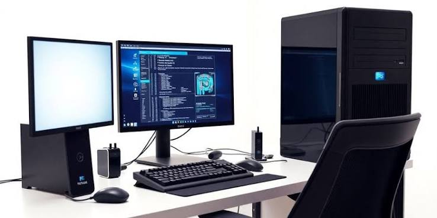
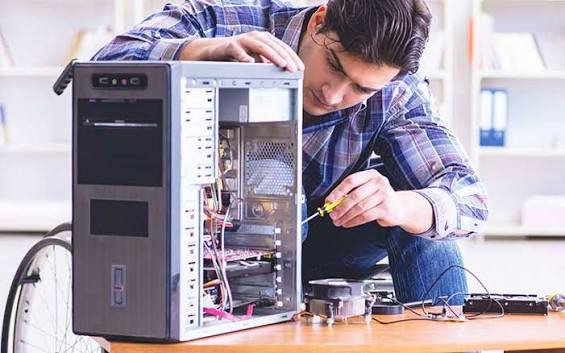

Galería Multimedia
Conoce algunas actividades relacionadas con la instalación, el mantenimiento y las redes informáticas.

Mantenimiento
Redes informáticas
🎧 Audio informático
Escucha nuestra presentación sobre informática.
🎬 Video promocional
Video educativo
Aprende más sobre el soporte técnico, el mantenimiento de computadoras y las redes informáticas.